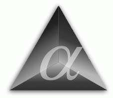
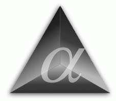

|
Hacked By wa1800z (HBW) |
| About our institute |
| People |
| History |
| Teaching |
| Research |
| Event Calendar |


Faculty of Humanities
| ||||||||
|
|
 Faculty of Humanities | ||||||
| On-line publications: | Software:
|
| On-line demos, tests, experiments | |
| Elsewhere on the Web: | |
|
Address: Instituut voor Fonetische Wetenschappen, Herengracht 338, 1016 CG Amsterdam, the Netherlands. |
Phone: +31 20 5252183 Fax: +31 20 5252197 E-mail: IFA@hum.uva.nl |